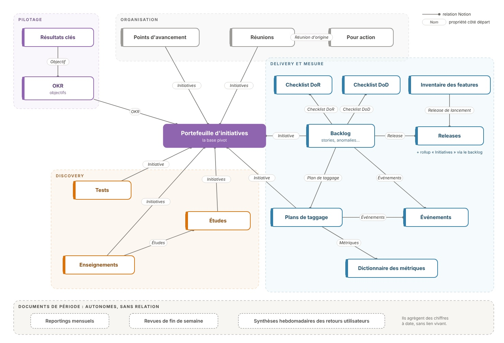
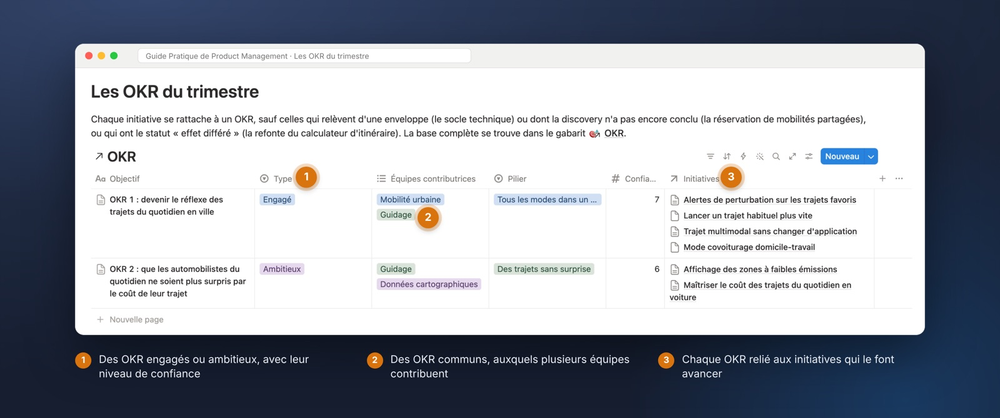
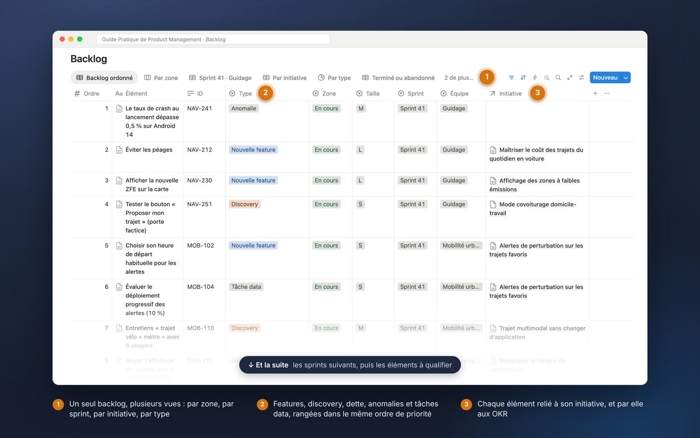
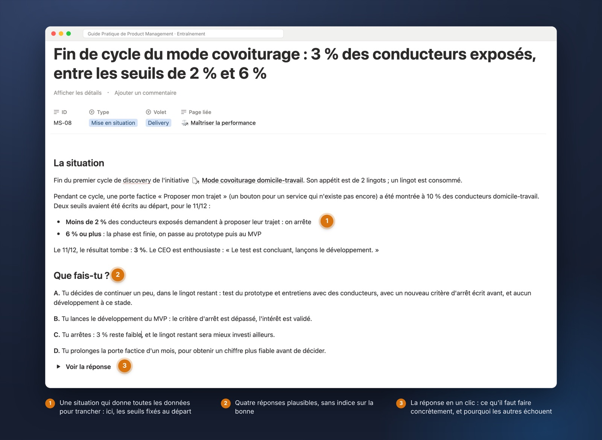
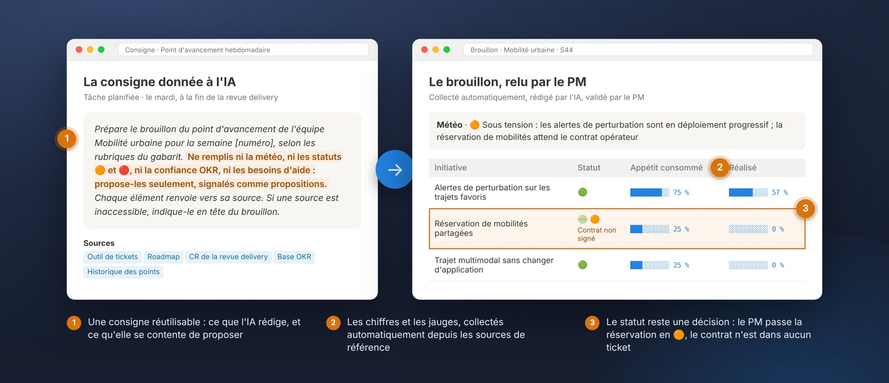

Un guide pour les PM et PO qui veulent structurer leur pratique, et pour les head of product et Chief Product Officer qui font grandir leurs équipes.
Une base méthodologique qui s'adapte à chaque contexte (taille d'équipe, B2B ou B2C, maturité de l'organisation), pas un framework à appliquer à la lettre.
🧭 Comment
Pour chaque pratique : ce qu'il faut faire, pourquoi, et les erreurs que cela évite.
Chaque gabarit est rempli sur un même cas fil rouge, une application de navigation, de la vision produit jusqu'à la user story. Au total, plus de 400 pages si on l'imprimait.
🤖 Avec l'IA
Un fil conducteur qui prend de plus en plus de place : comment l'IA change concrètement le quotidien du PM.
Le guide lui-même a été écrit en binôme avec une IA : je fixe les positions et les arbitrages, l'IA m'aide à les confronter aux ouvrages de référence, à les approfondir, à les structurer et à les illustrer.
25 chapitres
Une pratique par chapitre, répartis en quatre volets. Pour chacun : l'essentiel en trois points, ce qu'il faut faire et pourquoi, des exemples, les signaux d'alerte et une checklist.
La version vierge des gabarits, prête à l'emploi : un clic crée le document déjà structuré, rangé dans l'une des 11 bases et relié à son initiative ou à sa story.
Trois volets qui fonctionnent en boucle, et non en cascade, posés sur un socle commun : l'organisation.
la mesure et les apprentissages
Vision
Où va-t-on, et pourquoi ?
Vision, marché, stratégie, promesse, North Star et OKR, roadmap
objectifs
Discovery
Quel problème résoudre, et comment ?
Utilisateurs, Opportunity Solution Tree, conception, tests, préparation du delivery
initiatives prêtes
Delivery
Construire, livrer, mesurer
Backlog, rituels, user stories, qualité, performance, pilotage, cycle de vie
Organisation
Le socle : organiser son temps, le planning du sprint, les rôles et les responsabilités, l'IA dans le process, l'analyse de la data
Toutes les pratiques découlent de 14 principes :
Choisir quoi faire
1Partir du problème, pas de la solution
2Comparer plusieurs options, jamais une seule
3Écrire ce à quoi on renonce
4Fixer d'abord ce qu'on est prêt à investir
Construire
5Livrer par petits incréments
6Tester avant de construire
7Décider à la fin de chaque cycle
8Viser le bon niveau de qualité, pas le meilleur
Piloter
9Mesurer ce que ça change, pas ce qui sort
10Estimer en grandes masses
11Rendre tout visible
12Faire vivre la vision en continu
S'organiser
13Une seule équipe, dès la discovery
14Responsabiliser sans laisser dériver
Voir et manipuler, en vrai !
Le guide ne se lit pas seulement, il s'utilise :
Il fonctionne comme un espace de travail.
Dans le guide, les exemples sont de vraies bases Notion, reliées entre elles.

La roadmap du trimestre
Les initiatives des trois équipes dans le temps, avec leur statut : discovery, delivery ou mesure.
1Plusieurs vues : frise du trimestre, Now / Next / Later, dual track
2Le statut de chaque initiative : discovery, delivery ou mesure
3Les trois équipes sur une même frise, pour voir qui fait quoi et quand
Deux OKR communs aux trois équipes, portés par la direction produit : chaque initiative de la roadmap s'y rattache.

1Des OKR engagés ou ambitieux, avec leur niveau de confiance
2Des OKR communs, auxquels plusieurs équipes contribuent
3Chaque OKR relié aux initiatives qui le font avancer
Le backlog
Le contenu des sprints dans l'ordre de priorité : stories, anomalies, discovery, dette ou tâches data, chacun relié à son initiative.

1Un seul backlog, plusieurs vues : par zone, par sprint, par initiative, par type
2Features, discovery, dette, anomalies et tâches data, rangées dans le même ordre de priorité
3Chaque élément relié à son initiative, et par elle aux OKR
Le tableau de bord du PM
Une seule page pour piloter sa semaine : roadmap, backlog, sprint en cours, comptes rendus et documents, en vue d'ensemble ou filtrés sur soi.
1Le brief matinal et l'agenda, en un clic pour démarrer la journée
2Les « pour action » issus des comptes rendus, avec leur échéance
3Le sprint filtré sur soi : Definition of Ready et statut design de chaque story
S'entraîner
Plus de 100 exercices pour ancrer les pratiques : mises en situation, vrai ou faux, repère l'erreur, cartes mémo, auto-diagnostic... Chaque correction explique pourquoi la bonne réponse l'emporte, et pourquoi les autres échouent.

1Une situation qui donne toutes les données pour trancher : ici, les seuils fixés au départ
2Quatre réponses plausibles, sans indice sur la bonne
3La réponse en un clic : ce qu'il faut faire concrètement, et pourquoi les autres échouent
L'IA dans le quotidien du PM
L'IA prépare, le PM décide. Le guide distingue quatre façons de s'en servir : co‑rédiger à partir d'un brouillon, challenger un document avant de le présenter, synthétiser des entretiens ou des avis, automatiser les reportings récurrents. Dans chaque chapitre où elle change vraiment la façon de faire, un encadré dit ce qu'on lui donne, ce qu'elle fait et ce qu'elle ne fait pas à la place du PM.
Une bibliothèque de 23 prompts prêts à l'emploi les accompagne, de la vision au delivery. Chaque fiche donne ce qu'on lui fournit, le prompt à copier, ce qu'on vérifie dans le résultat et un exemple sur le cas fil rouge.
Les automatisations gardent toujours une validation humaine. Quelques exemples :
le compte rendu de réunion est rédigé par l'IA, validé par l'animateur, puis ses points d'action sont inscrits dans la base ;
le point d'avancement hebdomadaire est préparé la veille, et ses statuts sont arrêtés en revue delivery ;
les user stories sont relues avant le sprint ;
le brief matinal et la revue de fin de semaine sont préparés automatiquement.

1Une consigne réutilisable : ce que l'IA rédige, et ce qu'elle se contente de proposer
2Les chiffres et les jauges, collectés automatiquement depuis les sources de référence
3Le statut reste une décision : le PM passe la réservation en 🟠, le contrat n'est dans aucun ticket
Ce que le guide change dans une équipe
Au-delà de la lecture, le guide est conçu pour être déployé rapidement dans une équipe produit :
Une méthodologie commune
Un même vocabulaire et les mêmes pratiques pour les PM, les PO, le design et la tech, de la vision à la user story.
La montée en compétence des PM et des PO
Chaque pratique expliquée avec ses raisons et ses pièges, des fiches pour approfondir, des exercices pour s'entraîner.
Des outils opérationnels dès les premières semaines
Roadmap, backlog, fiches initiatives et user stories prêtes à l'emploi dans Notion, reliées entre elles.
Une organisation clé en main
Cadence de sprint, rituels, planning type de la semaine du PM, et des reportings automatisés avec l'IA.
Travailler ensemble
Sylvain Lemonnier
Product leader et coach en product management
Ce guide, je l'ai construit en 20 ans de product management, notamment en tant que Head of Product et Chief Product Officer chez Qwant, Mappy et RATP, à la tête d'équipes de 10 à 25 personnes.
Aujourd'hui, je souhaite mettre cette expérience au service d'une entreprise :
En rejoignant une direction produit comme Chief Product Officer ou Head of Product
En direction produit de transition ou à temps partagé le temps de structurer ou de recruter
Ou en mission structurer une fonction produit, coacher les PM et les PO, installer des rituels, une roadmap et un pilotage qui produisent des décisions, intégrer l'IA dans le quotidien des équipes produit